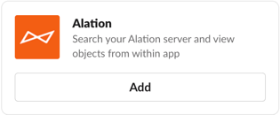

Alation Anywhere for Slack¶
Alation Cloud Service Applies to Alation Cloud Service instances of Alation
Available from 2022.4
With Alation Anywhere for Slack, you can connect Alation to Slack and perform the following actions directly within Slack:
Search the Alation catalog.
See rich previews of Alation catalog pages when you paste a link, and interact with the page by starring or watching it.
Start and reply to Alation Conversations about catalog objects.
By using Alation Anywhere for Slack, you can get more work done without leaving the context of your important work conversations.
Prerequisites¶
To use Alation Anywhere for Slack, you must meet the following prerequisites:
You must be using Alation Cloud Service and be on the cloud native architecture.
To determine if you’re already on the cloud native architecture or to request migration to it, contact Alation Support.
Alation Anywhere for Slack is not available for on-premise installations of Alation.
You can’t be using Slack’s Enterprise Grid deployment. It isn’t supported.
A Slack workspace can only connect to a single instance of Alation. If you’re logged into multiple Slack workspaces, you can connect to a different instance of Alation in each workspace.
Install the Alation App in Slack¶
To use Alation Anywhere for Slack, you have to install the Alation app in Slack.
Find the app in one of the following ways:
On the web:
Visit the Alation app page in the Slack App Directory online.
Click Add to Slack.
In Slack:
Click Apps in the top left corner. If you don’t see this option, click More or Browse Slack to find it. The Slack App Directory will open inside Slack.
Search for “Alation.” When you find it, click Add.
A new browser tab will open with information about the Alation Slack app. Click Add to Slack.
If you don’t have permission to install apps in Slack, you may need to submit a request to have it installed.
If you have permission to install apps, the Slack app directory informs you what permissions Alation needs to connect to Slack. Click Allow to continue connecting.
Enter your company’s Alation domain, then click Continue.

Important
You have ten minutes to enter your Alation domain. If you take more than ten minutes, you’ll have to start the installation process over again.
A success message should appear. Click Go to Slack to open your Slack workspace and start using Alation in Slack. You must first log into your Alation account in Slack. See the next section for instructions.
Log Into Alation in Slack¶
To use Alation Anywhere for Slack, you must be logged into Alation through Slack. To log into the Alation Slack app:
Type /alation login or attempt to search Alation by typing /alation search search_term. A message will appear in Slack asking you to log in.
Click Connect.
If you are currently logged into Alation, a new browser tab will open with a message that you’ve successfully authenticated.
If you’re not currently logged into Alation, a new browser tab will open to the Alation login screen or your identity provider. Enter your credentials and log in. You’ll then see a message that you’ve successfully authenticated.
Click Go to Slack. If your browser asks whether to open Slack, allow it.
When Slack opens, you should see a message that you have connected with Alation.
Note
If you clicked Not now, you will be asked to log in again next time you enter an /alation command. If you clicked Don’t ask again, the only way you can log in is by entering /alation login.
Log Out of Alation in Slack¶
To log out of the Alation Slack app, type /alation logout. This disconnects Alation from Slack. You will no longer be able to search Alation within Slack or see rich previews of Alation links until you log back in.
Search Alation in Slack¶
By searching Alation within Slack, you don’t have to leave the context of a Slack conversation to find and post information from your Alation catalog.
To search Alation in Slack, type /alation search search_terms in Slack. You can enter one or more words for the search term. Press Enter to submit the search. A pop-up appears showing you the top search result from Alation.
Note
You can also search using the simplified /alation search_terms command. But you won’t be able to use the simplified search command to search for words that are reserved as commands, like “help,” “login,” and “logout.” Instead you would have to use the full search command, for example /alation search login.
From the search pop-up, you can:
Post the top search result to the Slack conversation by clicking Send it in chat. A preview of that catalog page will be sent to the Slack channel. It may be a basic preview or a rich preview, depending on the catalog page.
Open the catalog page for the top search result in Alation by clicking the search result’s title.
See the top ten search results in Slack by clicking See more results. You can then filter by object type, modify the search terms, and resubmit the search to get updated results while still in Slack.
Note
When viewing multiple search results, each result has its own Send it in chat button. The search window stays open when you click this button, so you can send multiple results to the chat quickly. Click Close to exit the search window.
In private channels and direct messages, you can only send up to five results in a row to the chat. To send more, click Close to exit the search window and run the same search again.
See the full search results in Alation by clicking Go to Alation Page.
Preview Alation Catalog Pages in Slack¶
When you post a Slack message containing a link to an Alation catalog page, a preview of the catalog page appears attached to the message. That way, readers of the message don’t have to go into Alation to understand what you’re talking about.
All catalog pages will show a basic preview in Slack, while certain pages will show a rich preview with additional features.
Catalog pages that have rich previews include:
Articles
Article groups (old glossaries)
Conversations
Data source objects
Queries
Table objects
From a rich preview, you can:
Open the catalog page in Alation by clicking on the page title.
See additional information by clicking the buttons at the bottom of the preview. For example, you can see custom fields for an article, a list of columns for a table, raw SQL for a query, and so forth. You can also view and start Conversations about the catalog page.
See trust check flags next to the page title. Hover over the icon to see what kind of flag it is.
Star or watch the page by clicking See more at the bottom of the preview.
For queries, open the query in Compose or open the query form by clicking See more.
Conversations in Slack¶
Applies to 2023.3 and newer
You can interact with Alation Conversations inside Slack, so you don’t have to leave Slack to ask and answer questions in Alation. There are two ways to do this:
Paste a direct link to an Alation Conversation in Slack
Use the Conversations button on a rich preview of an Alation catalog page in Slack
Direct Link to a Conversation¶
When you post a Slack message containing a link to an Alation Conversation, Slack will show a rich preview of the Conversation where you can see its details and reply to it. In the rich preview, you’ll see the Conversation subject, author, and body, along with links and buttons to interact with the Conversation. From the preview you can:
Open the Conversation in Alation by clicking the Conversation subject.
Open the author’s user profile in Alation by clicking the author’s name.
See details about the Conversation by clicking the Details button. You’ll see the Conversation’s assignee, author, participants, and the Alation catalog page the Conversation refers to. Click on any of these to open their corresponding pages in Alation.
Reply to the Conversation and see other replies by clicking the See all replies button.
Resolve or reopen the Conversation by clicking See more and then clicking the Mark Resolved or Reopen button.
Conversations in Rich Previews¶
Catalog pages that support rich previews in Slack will have a Conversations button. Click the button, and a dialog box will open showing a list of existing Conversations that refer to the catalog object. From there, you can:
Open a Conversation in Alation by clicking the Conversation subject.
Open an author’s user profile in Alation by clicking the author’s name.
Send a rich preview of a Conversation to Slack by clicking the Send to chat button. Anyone in the Slack channel can then interact with the Conversation as described above.
Start a new Conversation about the catalog object by clicking the New conversation button. In the dialog box that appears, enter a subject and body, then click Post. This will create the Conversation in Alation, link it to the catalog object, and assign it to you. It will also send a success message to the Slack channel. Next time you view the rich preview for the relevant catalog object and click the Conversations button, you can then interact with the new Conversation in Slack.
Get Help in Slack¶
Type /alation help in Slack to get help directly within Slack.
Troubleshooting¶
If you enter an /alation command in Slack and get an error message saying /alation failed with the error “dispatch_failed”, then your message has failed to reach Alation. Check your internet connection and try again.
Support and Privacy¶
Alation support email: support@alation.com
Alation support site: https://alation.force.com
Alation privacy policy: https://alation.com/privacy-policy